Rapport Technique
Prédire un rendement et recommander une culture
Données, modélisation et résultats des deux services : /predict estime le rendement d'une parcelle, /recommend classe les cultures d'un pays par rendement prédit. L'application est déployée en préproduction et en production.
1. Contexte et données
Agritech Answers veut proposer aux agriculteurs une application web qui répond à deux questions :
/predict: l'agriculteur a déjà choisi sa culture et veut connaître le rendement attendu de sa parcelle ;/recommend: il cherche quelle culture choisir dans son pays ; le service estime le rendement des 10 cultures à partir de l'historique du pays, puis les classe.
| Agriculture CropYield | CropYield Prediction | |
|---|---|---|
| Une ligne | une parcelle sur une saison | un pays, une année, une culture |
| Volume brut | 1 000 000 lignes × 10 colonnes | 4 fichiers sources + un fichier déjà assemblé |
| Période | pas d'année | 1990‑2013 |
| Géographie | 4 zones sans lieu réel (North, East, South, West) | 168 pays après jointure, 115 après nettoyage |
| Cultures | 6 | 10 |
| Variables principales | pluie, température, sol, engrais, irrigation | rendement, température, pluie, pesticides |
| Cible | Yield_tons_per_hectare (t/ha) |
yield_t_ha (t/ha, converti depuis hg/ha) |
| Service | /predict |
/recommend |
Les six cultures du jeu parcellaire ont presque le même rendement : il ne permet pas de classer des cultures. Le jeu historique les distingue bien, mais ne décrit aucune parcelle. Chaque service a donc son propre dataset et son propre modèle, et les lignes des deux jeux ne sont jamais mélangées.
| Information du dataset parcellaire | Utilisée par le modèle /predict |
Demandée dans l'interface |
|---|---|---|
Pluie de la saison (Rainfall_mm) |
oui | oui |
Température moyenne (Temperature_Celsius) |
oui | oui |
Engrais, oui ou non (Fertilizer_Used) |
oui | oui |
Irrigation, oui ou non (Irrigation_Used) |
oui | oui |
Culture (Crop) |
non : aucun gain mesuré (chapitre 3) | non |
Type de sol (Soil_Type) |
non : aucun gain mesuré (chapitre 3) | non |
Culture et type de sol existent dans le dataset, mais l'analyse les a écartés du modèle : l'interface ne demande donc que les quatre variables réellement utilisées.
Préparation des données
- Agriculture CropYield : un million de lignes sans valeur manquante ni doublon, aux distributions très
régulières et aux catégories équilibrées. Les 231 rendements négatifs, impossibles, sont retirés :
il reste 999 769 lignes pour
/predict. - CropYield Prediction : le fichier déjà assemblé,
yield_df.csv, n'est pas utilisé. Il duplique des lignes (jusqu'à 52 relevés de température par pays et par année danstemp.csv) et perd des pays dont le nom diffère d'un fichier à l'autre. L'assemblage est refait à partir des quatre sources, sur le code ISO3 des pays : 22 679 lignes et 168 pays sur 1990-2013.
Trois règles donnent le dataset historique nettoyé, sans inventer de valeurs :
| Règle | Traitement | Lignes | Pays |
|---|---|---|---|
| Pluie absente certaines années | la valeur connue du pays est reprise (947 lignes de 2003, 6 des Bahamas en 1990‑1991) | 953 complétées | — |
| Pays sans température ou sans pesticides | pays retirés plutôt que complétés avec les valeurs d'un voisin | −6 322 | −51 |
| Pluie erronée | Monténégro et Soudan, dont la pluie est recopiée d'un autre pays dans l'ordre alphabétique, retirés | −38 | −2 |
Dataset historique nettoyé : 16 319 lignes, 115 pays, 10 cultures, 1990-2013, aucune valeur manquante
(data/processed/crop_yield_clean.csv). C'est le dataset historique nettoyé utilisé comme source pour la modélisation
de /recommend.
2. Exploration et stratégie
Jeu parcellaire (/predict) : quatre variables portent le rendement
| Variable | Corrélation | Relation observée |
|---|---|---|
Rainfall_mm |
0,765 | la plus liée au rendement ; relation linéaire |
Fertilizer_Used |
0,442 | rendement moyen supérieur de 1,50 t/ha avec engrais |
Irrigation_Used |
0,354 | rendement moyen supérieur de 1,20 t/ha avec irrigation |
Temperature_Celsius |
0,086 | +0,445 t/ha du plus froid au plus chaud, de façon régulière |
Days_to_Harvest |
−0,003 | aucune relation visible (0,029 t/ha d'écart entre tranches) |
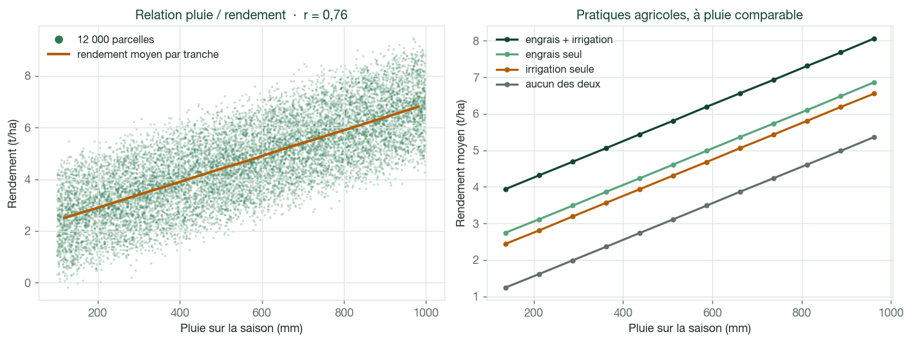
- Les courbes de droite sont presque parallèles : l'écart de rendement moyen associé à l'engrais et à l'irrigation reste le même quel que soit le niveau de pluie.
Region,Soil_Type,CropetWeather_Conditionsont équilibrées, et le rendement moyen ne diffère que de 0,012 t/ha au maximum entre leurs modalités.
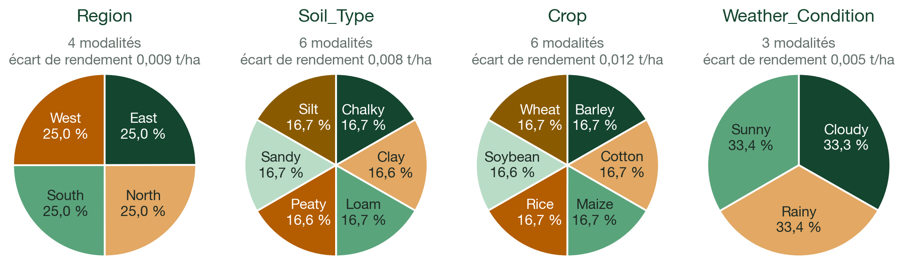
/recommend ne peut pas s'appuyer sur ce dataset. Classer six cultures qui ont le même
rendement donnerait un ordre au hasard. C'est pour cette raison que le second dataset est
utilisé.
Analyse en composantes principales
| Axe | F1 | F2 | F3 | F4 | F5 | F6 |
|---|---|---|---|---|---|---|
| Variance expliquée (%) | 32,58 | 16,71 | 16,68 | 16,67 | 16,62 | 0,74 |
| Cumul (%) | 32,58 | 49,29 | 65,97 | 82,64 | 99,26 | 100,00 |
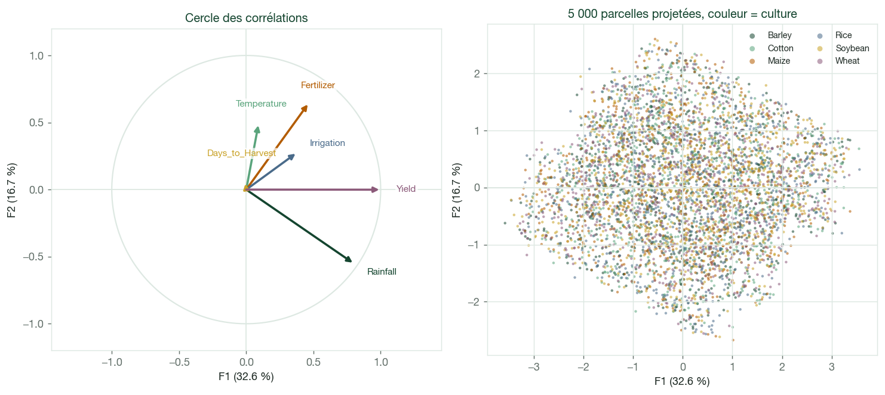
- Un seul axe se détache : F1 est l'axe du rendement (corrélation de 0,99), avec la pluie (0,79), l'engrais (0,46) et l'irrigation (0,37). Ce sont les variables clés du jeu parcellaire.
- Aucune réduction de variables possible : sans le rendement, chaque axe explique environ 20 % de la variance, et les cultures ne se séparent pas. L'ACP reste exploratoire.
Jeu historique (/recommend) : des cultures très différentes
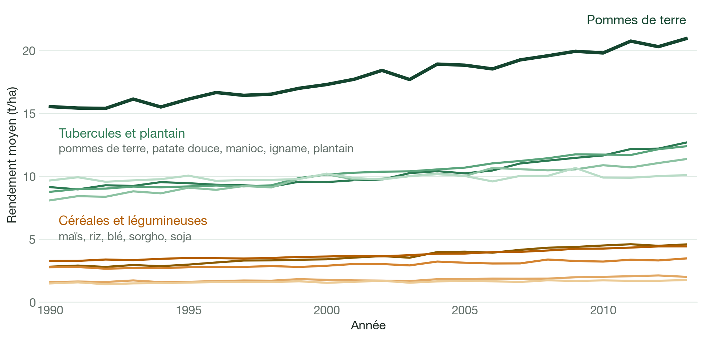
Les niveaux de rendement varient fortement d'une culture à l'autre, sur les 24 années : c'est ce signal, absent du
jeu parcellaire, qui rend /recommend possible.
Stratégie : deux jeux, deux modèles
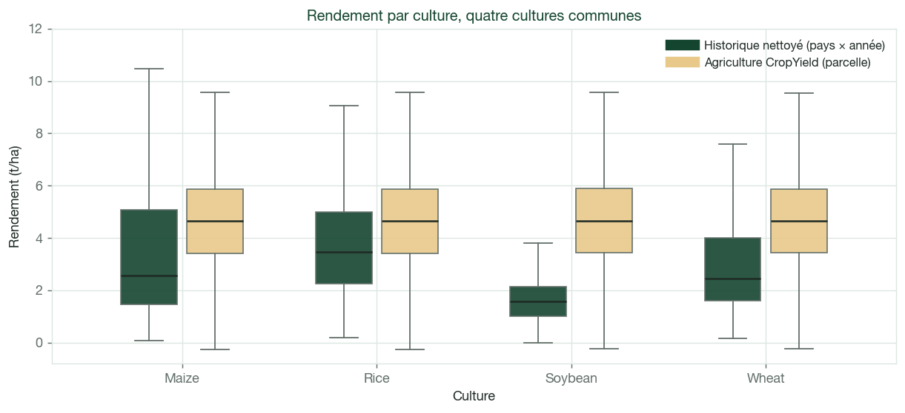
Sur les quatre cultures communes, l'historique montre des niveaux bien distincts, du soja (médiane 1,58 t/ha) au riz (3,47 t/ha), alors que le jeu parcellaire donne quatre boîtes presque identiques.
Aucune fusion ligne à ligne. Les deux jeux n'ont ni la même unité d'observation, ni les mêmes plages de valeurs, ni la même définition de la pluie. Ils répondent à deux questions différentes, avec deux modèles distincts.
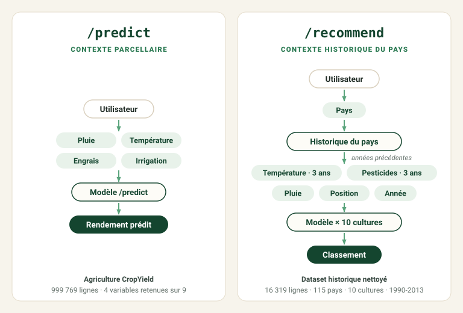
3. Modélisation /predict — estimation du rendement
La modélisation suit cinq étapes, toutes avec le même protocole : référence (notebook 07), sélection des variables et feature engineering (notebook 08), modèles non linéaires (notebook 09), tuning (notebook 10) et évaluation finale sur le jeu de test (notebook 11). Le modèle retenu est ensuite réappris sur toutes les lignes pour être servi.
Protocole
- Découpage. Les 999 769 lignes, après le retrait des 231 rendements négatifs, sont découpées une
fois pour toutes en 80 % d'entraînement (799 815 lignes) et 20 % de test (199 954 lignes), avec
random_state=42. Le tirage est aléatoire : le dataset n'a ni date ni année. - Rôle du test. Le jeu de test n'a servi à aucun choix de modèle, de variable ou d'hyperparamètre : il sert uniquement à l'évaluation finale du modèle retenu.
- Comparaisons. Validation croisée
KFold(n_splits=5, shuffle=True, random_state=42)sur le jeu d'entraînement : 639 852 lignes d'apprentissage et 159 963 d'évaluation par fold, mêmes folds pour tous les modèles. Le score est la moyenne des 5 folds. - Métriques. RMSE (t/ha, pénalise les grosses erreurs) et R² (part de la variance expliquée) sont les métriques principales ; la MAE (t/ha) les complète.
- Pipeline. Variables catégorielles encodées par
OneHotEncoder(handle_unknown="ignore"), variables numériques inchangées, puis le modèle. L'encodage est réappris dans chaque fold : pas de fuite de données.
Feature engineering : les variables construites
L'exploration montre des relations simples et presque linéaires. Avant de garder un modèle aussi simple, on vérifie si des relations plus complexes apportent une information en plus. Deux familles d'interactions sont construites à partir des variables du jeu :
| Variable construite | Calcul | Pourquoi |
|---|---|---|
Rainfall_x_Fertilizer |
pluie × engrais (0 ou 1) | l'effet de la pluie pourrait dépendre de l'engrais |
Rainfall_x_Irrigation |
pluie × irrigation (0 ou 1) | l'effet de la pluie pourrait dépendre de l'irrigation |
Fertilizer_x_Irrigation |
engrais × irrigation | les deux intrants pourraient se renforcer |
Rainfall_x_<culture>, Temperature_x_<culture> |
pluie et température limitées aux lignes d'une culture, 0 ailleurs : 12 colonnes pour les 6 cultures | chaque culture pourrait avoir sa propre pente de pluie et de température |
Les colonnes sont ajoutées dans le pipeline, avant l'encodage : elles sont recalculées dans chaque fold.
Jeux de variables testés
| Jeu | Features | One‑hot | Numériques | Total colonnes |
|---|---|---|---|---|
| 1. Toutes les variables | Crop, Soil_Type, Region, Weather_Condition, Fertilizer_Used, Irrigation_Used, Rainfall_mm, Temperature_Celsius, Days_to_Harvest |
23 | 3 | 26 |
| 2. Variables réduites | Crop, Soil_Type, Fertilizer_Used, Irrigation_Used, Rainfall_mm, Temperature_Celsius |
16 | 2 | 18 |
| 3. + interactions eau × intrants | toutes les variables, Rainfall_x_Fertilizer, Rainfall_x_Irrigation, Fertilizer_x_Irrigation |
23 | 6 | 29 |
| 4. + effets selon la culture | toutes les variables, Rainfall_x_<culture>, Temperature_x_<culture> |
23 | 15 | 38 |
5. Variables sélectionnées + Crop |
Crop, Fertilizer_Used, Irrigation_Used, Rainfall_mm, Temperature_Celsius |
10 | 2 | 12 |
| 6. Variables sélectionnées | Fertilizer_Used, Irrigation_Used, Rainfall_mm, Temperature_Celsius |
4 | 2 | 6 |
catégorielle : encodée par one-hot, une colonne par modalité, variables oui/non comprises ;
numérique : gardée telle quelle ; interaction : colonne construite (section précédente), numérique.
Les variables réduites retirent Region, Weather_Condition et Days_to_Harvest ; les jeux 3 et 4 ajoutent les
interactions aux 9 variables ; les variables sélectionnées sont les 4 qui portent le signal.
Référence et sélection des variables
Chaque jeu est appris par la même régression linéaire, avec les mêmes 5 folds.
| Étape | RMSE CV (t/ha) | MAE CV (t/ha) | R² CV | Ce qu'on apprend |
|---|---|---|---|---|
Référence naïve (DummyRegressor) |
1,695214 | 1,388358 | ≈ 0 | prédire le rendement moyen donne une erreur proche de l'écart-type du rendement (1,695 t/ha) |
| 1. Toutes les variables | 0,500337 | 0,399294 | 0,91289 | la régression linéaire réduit l'erreur d'environ 70 % |
| 2. Variables réduites | 0,500334 | 0,399293 | 0,91289 | Region, Weather_Condition et Days_to_Harvest n'apportent rien |
| 3. + interactions eau × intrants | 0,500338 | 0,399296 | 0,91289 | l'effet de la pluie ne dépend pas des intrants : ces colonnes ne pèsent presque rien dans les prédictions |
| 4. + effets selon la culture | 0,500341 | 0,399297 | 0,91289 | les colonnes par culture se partagent l'information de la pluie sans en ajouter |
5. Variables sélectionnées + Crop |
0,500333 | 0,399293 | 0,91289 | la culture n'apporte rien (détail ci-dessous) |
| 6. Variables sélectionnées | 0,500332 | 0,399292 | 0,91289 | les 4 variables suffisent : meilleure régression |
- Les écarts entre régressions (0,00001 t/ha) sont bien plus petits que la variation entre folds (0,0009 t/ha) : aucun gain.
Crop: à conditions identiques, la culture ne change la prédiction que de 0,003 t/ha, pour une erreur de 0,50 t/ha. Elle n'est donc ni dans le modèle ni dans l'interface.- Ces relations existent peut-être en agronomie, mais ce jeu de données ne permet pas de les mettre en évidence.
Variables retenues : les 4 variables sélectionnées, avec une RMSE de validation croisée de 0,500332 t/ha pour la régression linéaire.
Modèles non linéaires
Six modèles sont comparés sur les jeux 1 et 2, sans optimisation : l'arbre et la forêt avec min_samples_leaf=100,
les boostings avec les réglages par défaut de leur librairie (sans arrêt anticipé pour HistGradientBoosting). La
régression linéaire sert de référence.
| Modèle | Toutes les variables — RMSE (MAE / R²) | Variables réduites — RMSE (MAE / R²) |
|---|---|---|
LinearRegression |
0,500337 (0,3993 / 0,9129) | 0,500334 (0,3993 / 0,9129) |
HistGradientBoosting |
0,500886 (0,3997 / 0,9127) | 0,500881 (0,3997 / 0,9127) |
LightGBM |
0,500924 (0,3998 / 0,9127) | 0,500922 (0,3998 / 0,9127) |
CatBoost |
0,501029 (0,3999 / 0,9126) | 0,500935 (0,3998 / 0,9127) |
RandomForest |
0,502018 (0,4007 / 0,9123) | 0,502129 (0,4008 / 0,9123) |
XGBoost |
0,502183 (0,4008 / 0,9122) | 0,502008 (0,4006 / 0,9123) |
DecisionTree |
0,508558 (0,4059 / 0,9100) | 0,507489 (0,4051 / 0,9104) |
- Aucun ne bat la régression linéaire, devant sur chacun des 5 folds ; les meilleurs boostings sont à moins d'un millième de t/ha, pour un entraînement plus long.
- Les variables réduites font aussi bien que toutes les variables.
- Ajoutées aux modèles d'ensemble (notebook 09), les interactions n'apportent rien non plus (écarts ≤ 0,00014 t/ha).
- Permutation, Spearman et SHAP donnent la même hiérarchie : pluie, puis engrais et irrigation, puis température.
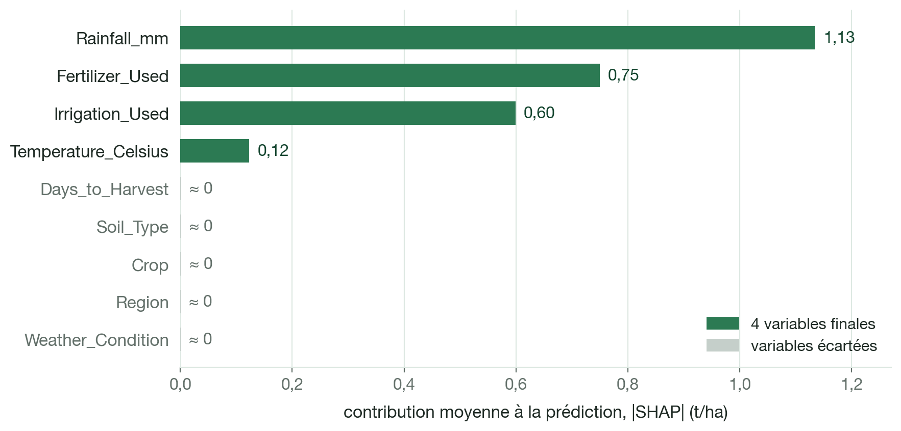
Ce résultat est cohérent avec l'EDA : les principales relations avec le rendement sont presque linéaires et les interactions testées n'apportent pas de gain. Les modèles plus complexes ont donc peu de structure supplémentaire à apprendre.
Tuning
Sur les 4 variables sélectionnées et les mêmes folds, un tuning léger teste 5 familles de modèles, puis un tuning approfondi les 2 meilleures. Les grilles testées sont détaillées en annexe C.
| Étape | Résultat (RMSE, MAE, R² de validation croisée) |
|---|---|
| 1. Tuning léger (10 configurations par famille) | meilleurs : CatBoost 0,500503 et HistGradientBoosting 0,500737 ; aucune famille ne passe sous la régression linéaire (0,500332) |
| 2. Tuning approfondi (35 configurations chacun) | CatBoost 0,500411 (MAE 0,399369, R² 0,91286) HistGradientBoosting 0,500640 (MAE 0,399543, R² 0,91278) |
| 3. Comparaison avec la régression linéaire | régression linéaire 0,500332 (MAE 0,399292, R² 0,91289) : devant en moyenne et sur chacun des 5 folds, 0 fold gagné par CatBoost ou HistGradientBoosting |
| 4. Choix | régression linéaire : meilleure RMSE, entraînement de 0,1 s par fold contre 16 s pour CatBoost et 29 s pour HistGradientBoosting |
Le tuning améliore légèrement les deux modèles, sans dépasser la régression linéaire, ni en moyenne ni sur un seul fold.
Modèle final
LinearRegression avec les 4 variables sélectionnées : meilleure RMSE en validation croisée, entraînement quasi
instantané, coefficients directement lisibles. Ce choix repose uniquement sur la validation croisée.
- Modèle évalué (notebook 11) : appris sur les 799 815 lignes d'entraînement, puis évalué une seule fois sur les 199 954 lignes de test. C'est ce modèle que mesure l'évaluation finale ci-dessous.
Évaluation finale sur le jeu de test
Le notebook 11 vérifie que le pipeline redonne les scores de validation croisée, l'entraîne sur tout le jeu d'entraînement, puis l'évalue sur le jeu de test. La ligne « Train » mesure ce modèle évalué sur les données qui ont servi à l'entraîner.
| Jeu | RMSE (t/ha) | MAE (t/ha) | R² |
|---|---|---|---|
| Train | 0,500330 | 0,399291 | 0,91289 |
| Validation croisée | 0,500332 | 0,399292 | 0,91289 |
| Test | 0,499268 | 0,398338 | 0,91323 |
- Train, validation croisée et test donnent des scores presque identiques : pas de surapprentissage.
- Les 231 rendements négatifs retirés (−1,15 t/ha à presque 0) reçoivent des prédictions faibles mais positives (0,817 à 1,815 t/ha), ce qui va dans le sens d'anomalies dans les données.
Modèle servi : refit sur les 999 769 lignes
Une fois l'évaluation finale faite, scripts/rebuild_models.py réapprend le même pipeline, avec les mêmes 4 variables
et les mêmes réglages, sur les 999 769 lignes. C'est ce refit que sert l'API (models/predict_model.joblib,
model_version 1.1.0). Ses métadonnées (models/predict_model_metadata.json) séparent evaluation (découpage
80/20, métriques du test, notebook 11) et refit (999 769 lignes).
Ce refit n'est pas réévalué : le test fait désormais partie de son apprentissage. Les performances de référence restent celles du test ci-dessus, mesurées avant le refit.
Suivi MLflow
Les 150 évaluations sont dans une expérience MLflow dédiée à /predict, un run par évaluation, avec le protocole, le
jeu de variables et les mêmes métriques cv_. Le run d'évaluation finale, à l'étape final_evaluation, ajoute
test_rmse, test_mae et test_r2. La capture montre les 11 runs de synthèse : triés par cv_rmse_mean, ils donnent
directement le classement des modèles. Le refit du modèle servi n'a pas de run MLflow.
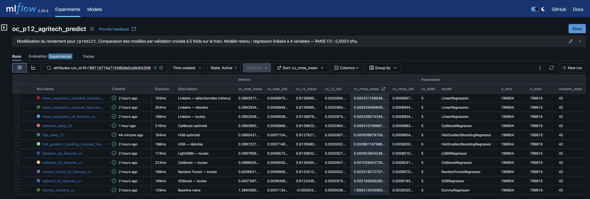
4. Modélisation /recommend — recommandation de cultures
La modélisation suit la même progression que pour /predict (notebooks 12 à 15) ; le notebook 16 réapprend
ensuite le modèle retenu pour le servir. Le modèle prédit un rendement par
culture, puis le service trie les 10 cultures : c'est une régression, pas une classification.
Protocole
Pour un pays et une culture, le rendement change peu d'une année à l'autre (corrélation de 0,985 avec l'année précédente) : un découpage aléatoire placerait des lignes presque identiques dans l'apprentissage et dans l'évaluation. Le découpage suit donc le temps.
2013 est gardée de côté pour le test final. Pour comparer les modèles, on utilise les 5 années précédentes, de 2008 à 2012 : chaque année est prédite uniquement à partir des années qui la précèdent.
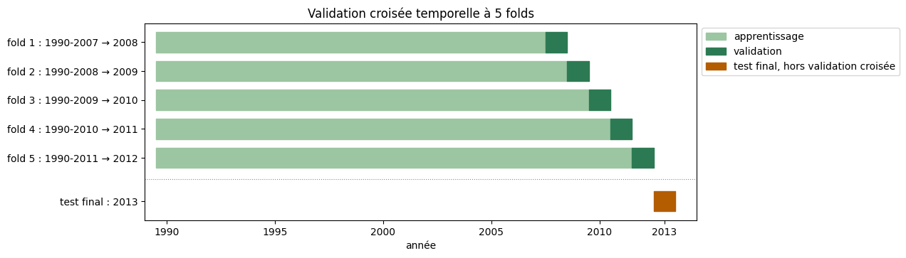
2013 n'a servi à aucun choix de modèle, de variable ou d'hyperparamètre.
Feature engineering : les variables construites
Le jeu historique ne donne que la culture, la température, la pluie et les pesticides de l'année. Les variables suivantes sont construites à partir de ces données, toujours avec les seules années passées.
| Variable construite | Calcul | Pourquoi |
|---|---|---|
log_pesticides |
logarithme du tonnage de pesticides | le tonnage va de moins d'une tonne à plus d'un million : en brut, presque toutes les lignes sont tassées au bas de l'échelle |
lat_abs |
latitude du pays, sans son signe | distance à l'équateur : distingue pays tempérés et tropicaux |
geo_x, geo_y, geo_z |
latitude et longitude du pays, combinées en une position sur un globe | la longitude n'a pas d'équivalent de l'équateur, donc pas de long_abs : elle sert seulement à situer le pays, avec la latitude ; deux pays voisins restent proches, y compris de part et d'autre de ±180° |
temp_hist, log_pest_hist |
moyenne des 3 années précédentes de la température et des pesticides | les conditions de l'année à venir ne sont pas connues au moment de recommander |
-
La position décrit la géographie du pays sans lui donner d'identifiant. Mais chaque pays ayant une position unique, un arbre peut aussi s'en servir pour reconnaître le pays (annexe B.2).
-
Le notebook 13 teste aussi des interactions culture × variable : une colonne par culture et par variable, qui ne vaut la variable que pour les lignes de cette culture (0 sinon), pour que chaque culture ait son propre effet plutôt qu'un effet commun. Exemple :
Maize x avg_tempreprend la température des lignes de maïs, 0 ailleurs.
Jeux de variables testés
| Jeu | Features | One‑hot / catégorielles | Numériques | Total colonnes |
|---|---|---|---|---|
| 1. Variables d'origine | crop, year, avg_temp, rain_mm, pesticides_t |
10 | 4 | 14 |
| 2. Pesticides en log | crop, year, avg_temp, rain_mm, log_pesticides |
10 | 4 | 14 |
| 3. + interactions culture × conditions | crop, year, avg_temp, rain_mm, log_pesticides, interactions |
10 | 4 | 44 |
| 4. + position du pays | crop, year, avg_temp, rain_mm, log_pesticides, lat_abs, geo_x, geo_y, geo_z, interactions |
10 | 8 | 48 |
5. + interactions culture × géographie (crop_x_geography) |
crop, year, avg_temp, rain_mm, log_pesticides, lat_abs, geo_x, geo_y, geo_z, interactions |
10 | 8 | 88 |
| 6. Conditions historiques | crop, year, temp_hist, rain_mm, log_pest_hist, lat_abs, geo_x, geo_y, geo_z, interactions |
10 | 8 | 88 (régression) / 18 (arbres) |
La température et les pesticides de l'année sont remplacés par leur moyenne sur les 3 années précédentes
(temp_hist, log_pest_hist), connues au moment de recommander. La pluie reste celle du pays, fixe dans ce
dataset. crop est encodée par one-hot, une colonne par culture (10 modalités) ; les autres variables sont
numériques : standardisées pour la régression linéaire, gardées telles quelles pour les modèles à arbres.
interactions ajoute une colonne par culture et par variable (0 pour les lignes des
autres cultures) : chaque culture peut avoir sa propre pente pour cette variable. Exemples :
- ligne 3 :
crop × {avg_temp, rain_mm, log_pesticides}— une colonneMaize x avg_temp, uneMaize x rain_mm, etc. pour chacune des 10 cultures (30 colonnes) ; - ligne 5 :
crop × {avg_temp, rain_mm, log_pesticides, lat_abs, geo_x, geo_y, geo_z}— le même principe, étendu à la géographie (70 colonnes).
Ces interactions ne servent qu'à la régression linéaire : les modèles à arbres de la section suivante peuvent apprendre nativement un effet différent selon la culture, sans en avoir besoin. La ligne 6 les garde donc pour la régression (88 colonnes) mais les retire pour les arbres (18 colonnes, section suivante).
Référence et sélection des variables
| Étape | RMSE (t/ha) | MAE (t/ha) | R² | Ce qu'on apprend |
|---|---|---|---|---|
| Référence naïve | 8,502 | 5,907 | −0,015 | prédire le rendement moyen ne suffit pas |
| Variables d'origine | 5,507 | 3,460 | 0,574 | les variables disponibles apportent déjà beaucoup d'information |
| Pesticides en log | 5,346 | 3,368 | 0,598 | le logarithme améliore la régression et est conservé |
| + interactions culture × conditions | 4,995 | 3,081 | 0,649 | chaque culture peut avoir sa propre pente de température, de pluie et de pesticides |
| + position du pays | 4,851 | 3,025 | 0,669 | la position seule, sans lui donner d'interaction, améliore encore, en gardant les interactions culture × conditions de la ligne précédente |
| + interactions culture × géographie | 4,673 | 2,871 | 0,693 | référence linéaire retenue (crop_x_geography) ; une tendance par culture atteint 4,607 mais n'est pas conservée, risquée à prolonger |
Sur les lignes qui ont un historique, cette régression obtient un RMSE de 4,664 (pas 4,673 : le nombre de lignes diffère). Remplacer la température et les pesticides de l'année par leur moyenne des 3 années précédentes fait passer ce RMSE à 4,644 — les seules conditions connues au moment de recommander.
Référence linéaire retenue : interactions culture × géographie, RMSE 4,673 t/ha — meilleure régression sans identifiant de pays ni tendance par culture, reprise comme référence au notebook 14.
Modèles non linéaires
On teste d'abord les modèles à arbres avec les variables de base, sans interaction, pour voir l'impact du non linéaire seul.
Réglages de départ (annexe D.1), validation temporelle :
| Modèle | Pesticides en log — RMSE (MAE / R²) | Position du pays — RMSE (MAE / R²) | Repr. finale — RMSE (MAE / R²) |
|---|---|---|---|
ExtraTrees |
1,706 (0,846 / 0,959) | 1,515 (0,743 / 0,968) | 1,442 (0,710 / 0,971) |
RandomForest |
2,098 (1,002 / 0,938) | 1,648 (0,821 / 0,962) | 1,609 (0,797 / 0,964) |
XGBoost |
2,119 (1,193 / 0,937) | 1,751 (0,984 / 0,957) | 1,693 (0,956 / 0,960) |
HistGradientBoosting |
2,286 (1,306 / 0,926) | 1,897 (1,094 / 0,949) | 1,844 (1,064 / 0,952) |
LightGBM |
2,270 (1,320 / 0,928) | 1,916 (1,116 / 0,948) | 1,843 (1,074 / 0,952) |
CatBoost |
2,306 (1,430 / 0,925) | 1,884 (1,140 / 0,950) | 1,851 (1,119 / 0,952) |
Le notebook 14 teste quand même les interactions culture × géographie sur les six familles : elles dégradent les
forêts (RandomForest, ExtraTrees) et XGBoost, et n'améliorent que légèrement HistGradientBoosting,
LightGBM et CatBoost. La suite garde donc « position du pays » sans interactions, plus simple et aussi bonne.
La représentation finale reprend « position du pays », en remplaçant la température et les pesticides par leur
moyenne des 3 années précédentes (temp_hist, log_pest_hist), connues au moment de recommander.
- Contrairement à
/predict, la régression linéaire ne suffit pas : les arbres font deux à trois fois moins d'erreur, même sans la position du pays. - La position du pays aide les arbres. La représentation finale les améliore encore de 0,05 à 0,09 t/ha, à lignes égales (lignes qui ont un historique).
Tuning
Un tuning léger teste 6 familles de modèles, puis un tuning plus fin approfondit les 3 meilleures.
| Étape | Résultat (RMSE, MAE, R² de validation) |
|---|---|
| 1. Tuning léger | meilleur — ExtraTrees, réglage de départ : 1,442 (MAE 0,710, R² 0,971) moins bon — RandomForest : 1,570 (MAE 0,791, R² 0,965) |
| 2. Trois finalistes | 1. ExtraTrees 1,442 (MAE 0,710, R² 0,971) 2. CatBoost 1,458 (MAE 0,753, R² 0,970) 3. LightGBM 1,483 (MAE 0,779, R² 0,969) |
| 3. Tuning approfondi | 1. ExtraTrees 1,436 (MAE 0,713, R² 0,971) 2. CatBoost 1,450 (MAE 0,740, R² 0,970) 3. LightGBM 1,465 (MAE 0,757, R² 0,970) |
| 4. Choix, avant 2013 | ExtraTrees : meilleures RMSE et MAE, plus stable d'une année à l'autre ; en plus, scikit-learn seul (plus simple à déployer) |
| 5. Allègement | 150 arbres, même RMSE (1,4349 contre 1,4359) et MAE (0,7114 contre 0,7127), puis compression lzma : 44,7 Mo |
- Pourquoi alléger ExtraTrees ? Le modèle doit être enregistré dans le dépôt et chargé par l'API, sous 50 Mo par fichier : au-delà, GitHub affiche un avertissement. Avec 300 arbres, il pèse 425 Mo (121,6 Mo compressés), et il est lent à charger.
- Moins d'arbres. La taille d'une forêt dépend de son nombre de nœuds, donc surtout du nombre d'arbres. Or la RMSE ne baisse plus au-delà de 150 arbres : on garde la même performance pour un fichier deux fois plus petit (60,8 Mo compressés), plus rapide à charger et à interroger (annexe D.4).
- Compression lzma. Le même modèle, compressé en lzma plutôt qu'en zlib, passe de 60,8 à 44,7 Mo : sous 50 Mo.
Modèle final
ExtraTrees à 150 arbres : max_features=0.9, min_samples_split=3, random_state=42, n_jobs=1.
- Variables : culture, année, température et pesticides moyens des 3 années précédentes, pluie du pays, position du
pays (
lat_abs,geo_x,geo_y,geo_z). - Les conditions historiques utilisent la moyenne des 3 années précédentes : la première année de chaque pays n'a donc pas d'historique et sort de l'apprentissage, ce qui ramène le développement de 15 624 à 14 941 lignes (1991-2012).
- Modèle évalué (notebook 15) : pipeline complet de 44,7 Mo compressés (lzma). C'est ce modèle que mesurent l'importance des variables et l'évaluation finale ci-dessous.
Importance des variables
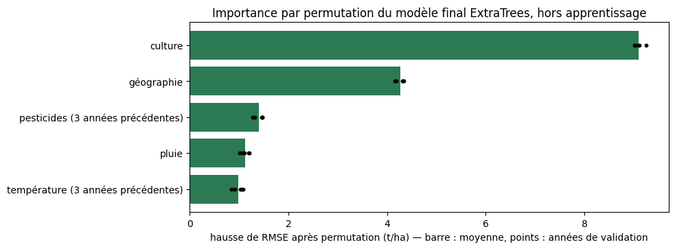
| Famille | Variables du modèle | Hausse de RMSE (t/ha, moyenne 2008-2012) |
|---|---|---|
| Culture | crop (10 cultures) |
9,10 |
| Géographie | lat_abs, geo_x, geo_y, geo_z (position du pays) |
4,27 |
| Pesticides | log_pest_hist (moyenne des 3 années précédentes, en log) |
1,40 |
| Pluie | rain_mm (valeur fixe du pays) |
1,12 |
| Température | temp_hist (moyenne des 3 années précédentes) |
0,98 |
| Année | year (non mélangée : sans elle, la RMSE passe de 1,435 à 1,830) |
— |
- La culture compte de loin le plus, puis la géographie ; les pesticides, la pluie et la température viennent loin derrière. L'ordre est le même les 5 années.
yearest la même pour toutes les lignes d'une année de validation : on ne peut pas la mélanger, son rôle est mesuré en réapprenant le modèle sans elle.- Pluie, température, pesticides et géographie sont des valeurs du pays : elles portent en partie le même signal, que le modèle peut se partager entre elles.
Évaluation finale sur le jeu de test
Le notebook 15 apprend le modèle retenu sur 1991-2012, puis l'évalue une seule fois sur 2013, gardée de côté jusque-là : le modèle était figé avant cette évaluation.
| Jeu | RMSE (t/ha) | MAE (t/ha) | R² |
|---|---|---|---|
| Validation temporelle 2008‑2012 | 1,4349 | 0,7114 | 0,9710 |
| Test final 2013 (695 lignes) | 1,6584 | 0,7615 | 0,9638 |
- Validation et test donnent des scores proches : le test est un peu moins bon, dans la continuité de l'erreur de validation, qui augmentait déjà d'une année à l'autre (environ 1,22 t/ha en 2008, 1,58 en 2012).
- Limite : en 2013, chaque culture testée figurait déjà dans les données de son pays les années précédentes. Le test ne mesure donc pas les recommandations de cultures jamais observées dans un pays.
Modèle servi : refit sur 1991-2013
Une fois l'évaluation finale faite, le notebook 16 réapprend le même pipeline, avec les mêmes variables et les mêmes
réglages, sur toutes les données disponibles : 15 636 lignes, de 1991 à 2013 (14 941 + 695). C'est ce modèle que
sert l'API (models/recommend_model.joblib, model_version 2.0.0, 46,9 Mo en lzma), pour l'année cible technique
2014.
Ce refit n'est pas réévalué : aucune donnée indépendante ne reste pour le mesurer. Les performances de référence restent celles du test 2013 ci-dessus, mesurées avant le refit.
Ce que recommande le modèle
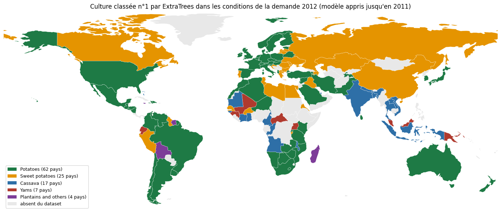
La carte montre, pour chacun des 115 pays, la culture classée n°1 pour la campagne 2012 par l'ExtraTrees finaliste à 300 arbres, appris jusqu'en 2011 : un diagnostic du comportement, sans rôle dans le choix du modèle final.
- Seules cinq cultures arrivent n°1, celles aux rendements les plus élevés en t/ha : pomme de terre, patate douce, manioc, igname et plantain.
- Limite : 25 des 115 n°1 sont des cultures jamais observées dans le pays, un cas que la validation ne mesure presque pas (annexe B.3). Le top 3 est plus robuste que le seul n°1.
Suivi MLflow
Les 1 422 évaluations sont journalisées dans une expérience MLflow dédiée à /recommend, avec les mêmes métriques
cv_ que pour /predict ; le run final, « ExtraTrees final — test 2013 », ajoute test_rmse, test_mae et
test_r2. La capture montre 13 runs représentatifs.
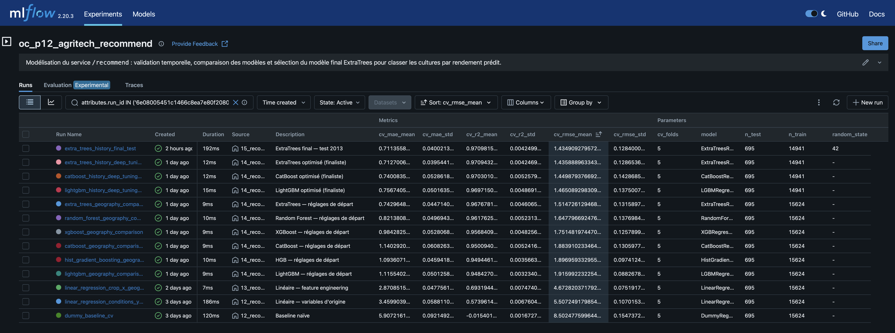
5. De l'analyse à l'application
Les deux modèles sont servis par une API : une interface Streamlit permet de les utiliser, et un dashboard Gradio suit l'activité de l'API. Le suivi des appels, la qualité du code et le déploiement sont présentés au chapitre 6.
Architecture
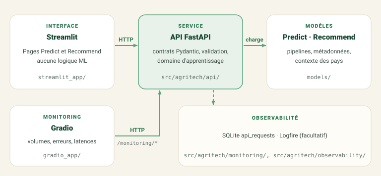
- L'API est construite avec FastAPI ; Pydantic définit et valide les contrats d'entrée et de sortie. Les
modèles sont chargés au démarrage, et la logique de prédiction reste séparée de la couche HTTP
(
agritech.serving). - L'interface Streamlit ne contient aucune logique ML. Les bornes, les domaines d'apprentissage, les pays, les
cultures et les valeurs par défaut viennent des endpoints
/context; l'interface envoie les valeurs saisies et affiche ce que l'API renvoie : rendement, classement et avertissements. - Reproductibilité. Les artefacts servis peuvent être reconstruits à partir des données préparées avec
make rebuild-models; la commande et les contrôles associés sont documentés dans le README.
API
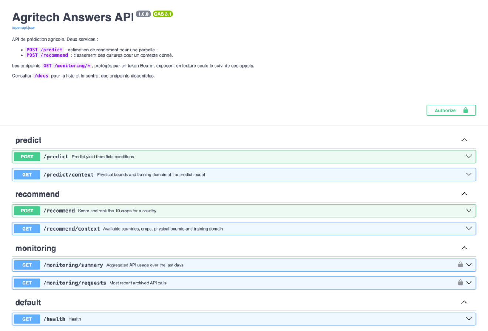
L'API expose un endpoint de santé et quatre endpoints métier, documentés automatiquement par FastAPI dans Swagger
(/docs) :
GET /health: état du service ;GET /predict/contextetGET /recommend/context: ce dont l'interface a besoin pour construire ses formulaires ;POST /predictetPOST /recommend: les deux services.
Deux endpoints de monitoring, en lecture seule et protégés par token, complètent l'API (chapitre 6).
Parcours Predict
- L'utilisateur saisit quatre conditions : pluie, température, fertilisation et irrigation.
GET /predict/contextfournit les bornes, le domaine d'apprentissage et les unités affichés dans le formulaire.POST /predictrenvoie le rendement estimé et signale les valeurs hors du domaine d'apprentissage.- La culture n'est pas demandée : elle n'apporte pas de gain mesurable au modèle (chapitre 3).
Parcours Recommend
- L'utilisateur choisit son pays.
- Ses conditions historiques (température, pluie, pesticides) sont proposées automatiquement par
GET /recommend/contextet restent modifiables. POST /recommendrenvoie le classement des 10 cultures par rendement estimé, et indique pour chacune si elle a déjà été cultivée dans le pays (observed_in_country).
Pourquoi 2014 ? Les données s'arrêtent en 2013 : 2014 est l'année cible technique qui permet au service de calculer les historiques du pays à partir de 2011-2013. Ce n'est pas une recommandation actuelle, et l'interface n'affiche pas cette date.
Validation et erreurs
- L'API valide toutes les entrées : une valeur physiquement invalide est refusée.
- Une valeur valide mais hors du domaine d'apprentissage est acceptée ; l'API la signale
(
out_of_training_domain) et l'interface affiche un avertissement. - Les erreurs de l'API ou du réseau sont traduites en messages courts et compréhensibles dans Streamlit.
Les bornes exactes sont visibles dans Swagger ; le contrat d'erreur est détaillé en annexe F.
6. Qualité, déploiement et monitoring
Ce chapitre présente les tests, la conteneurisation, le déploiement en préproduction et en production, puis le suivi de l'API.
Applications en ligne
Préproduction (branche staging) |
Production (branche main) |
|
|---|---|---|
| API FastAPI (Swagger) | oc-p12-agritech-api-preprod.onrender.com/docs | oc-p12-agritech-api-prod.onrender.com/docs |
| Interface Streamlit | oc-p12-agritech-streamlit-preprod.onrender.com | oc-p12-agritech-streamlit-prod.onrender.com |
| Dashboard Gradio (monitoring) | oc-p12-agritech-gradio-preprod.onrender.com | oc-p12-agritech-gradio-prod.onrender.com |
Les services sont hébergés sur l'offre gratuite de Render : après une période sans trafic, le premier accès peut prendre environ une minute.
Tests et qualité
La suite complète est relancée par la CI à chaque push ou pull request vers staging ou main, et à la
demande :
| Tests | Nombre |
|---|---|
| Interfaces Streamlit et Gradio (client HTTP compris) | 294 |
| API, modèles, monitoring et observabilité | 438 |
| Protocole d'entraînement (historique, découpage temporel) | 13 |
| Architecture Docker | 22 |
| Reconstruction et sérialisation des modèles | 26 |
| Total | 793 |
Couverture globale : 97 % sur le périmètre mesuré. Les invariants des modules d'entraînement
(historique sans fuite temporelle, découpage temporel) sont testés à part. Lint : Ruff (make lint).
Docker : une image par service
- Un seul
Dockerfile, avec une cible par service (api,streamlit,gradio) ; chaque image n'installe que ses dépendances, et seule celle de l'API contient les modèles. - L'argument
SERVICEchoisit l'image, car Render ne permet pas de choisir la cible ;PORTfixe le port d'écoute. - En local, Docker Compose lance les trois services (annexe H).
CI/CD : de Git à Render
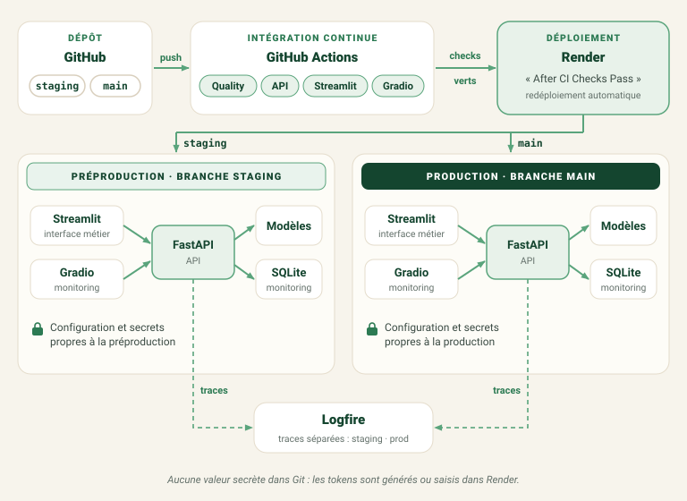
Chaque push ou pull request vers staging ou main lance quatre checks GitHub Actions en parallèle
(historique des runs) :
| Check | Ce qui est vérifié |
|---|---|
| Quality | poetry.lock cohérent, requirements Docker à jour, lint Ruff, suite complète avec couverture |
| API | tests de l'API, du monitoring, de l'observabilité et du serving (438), puis image api, démarrage du conteneur et /health |
| Streamlit | tests de l'interface et du client HTTP commun (178), puis image streamlit, démarrage et /_stcore/health |
| Gradio | tests du dashboard et du client HTTP commun (213), puis image gradio, démarrage et réponse de / |
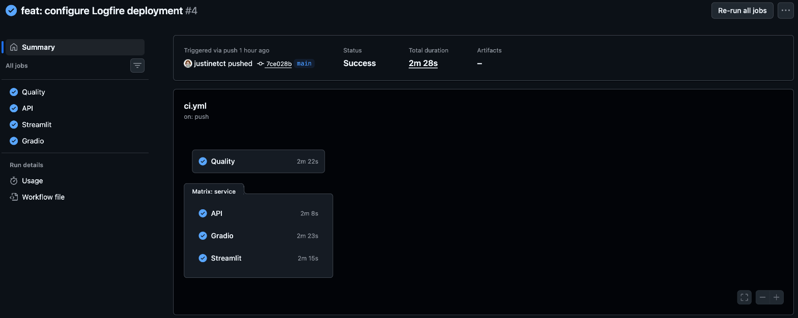
- Chaque image est démarrée comme sur Render (
PORT=10000) et doit répondre à son healthcheck ; un check rouge désigne directement le service en cause. - GitHub Actions ne déploie rien : les six services Render attendent que tous les checks d'un commit soient verts (« After CI Checks Pass »), puis reconstruisent eux-mêmes les images.
Monitoring : historique, dashboard et traces
| Brique | Rôle | Emplacement |
|---|---|---|
SQLite (api_requests) |
historique de chaque POST /predict et POST /recommend : entrées, réponse, statut, durée, versions |
dans l'API, seule à lire et écrire la base |
GET /monitoring/summary et GET /monitoring/requests |
résumé d'une période et derniers appels, protégés par token | endpoints de l'API |
| Dashboard Gradio | volumes, erreurs et latences par service | service séparé, qui appelle l'API |
| Logfire | trace de POST /predict, POST /recommend et GET /health |
service externe, actif si un token est configuré |
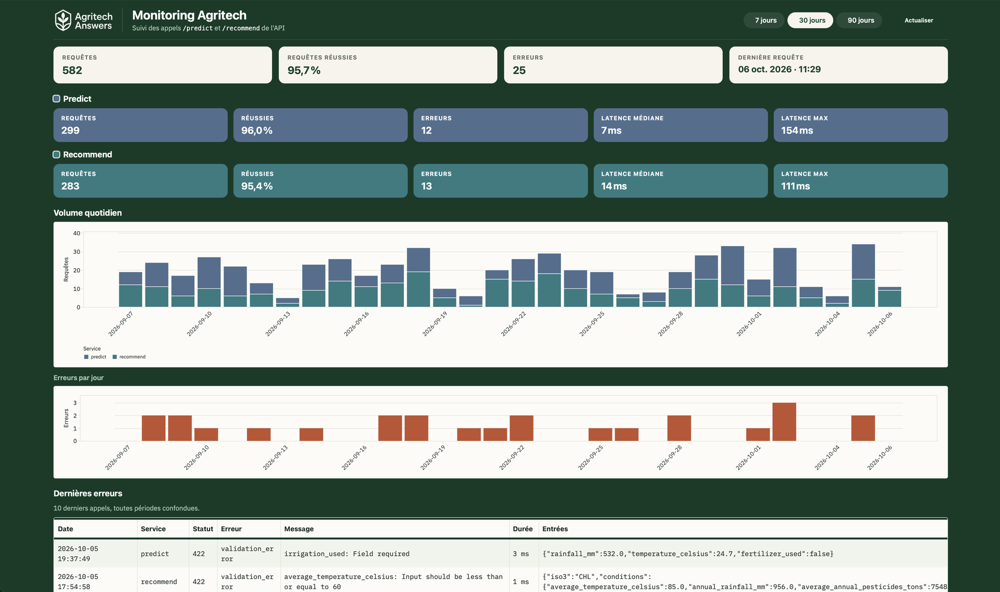
- Gradio ne lit jamais la base : il passe par l'API.
- Sur Render, la base SQLite est éphémère : l'API régénère un historique de démonstration de 90 jours quand elle est recréée. Les volumes affichés viennent surtout de cet historique et ne représentent pas un trafic réel.
- SQLite suffit pour une seule instance de démonstration ; PostgreSQL serait utile avec plusieurs instances ou un suivi dans la durée.
- Logfire sépare les traces de préproduction et de production. Détails en annexe G, schéma de la table en annexe E.
Annexes
A. Glossaire
| Terme | Définition |
|---|---|
| ACP | analyse en composantes principales : résume les variables en axes (F1, F2, …) de variance décroissante |
| CI/CD | GitHub Actions teste chaque modification ; Render redéploie ensuite automatiquement quand tous les checks sont verts |
| Healthcheck | adresse qui indique qu'un service fonctionne (/health pour l'API) |
| Importance par permutation | hausse de l'erreur quand une variable est mélangée |
| MAE | erreur absolue moyenne, en t/ha |
| Préproduction | copie de la production, pour valider une modification avant de la publier |
| R² | part des variations du rendement expliquée par le modèle (1 = parfait, 0 = pas mieux que la moyenne) |
| RMSE | racine de l'erreur quadratique moyenne, en t/ha : pénalise davantage les grosses erreurs |
| SHAP | contribution de chaque variable à chaque prédiction |
| Spearman | corrélation de rang, sans supposer de relation linéaire |
| Validation croisée | 5 parts du jeu d'entraînement, chacune prédite par un modèle appris sur les 4 autres |
| Validation temporelle | chaque année prédite par un modèle appris sur les années précédentes |
B. Limites et précautions
B.1 /predict — limites des données
- Distributions très régulières et catégories équilibrées : les liens appris décrivent ces données, pas des preuves agronomiques.
- Ni pays ni année, et
Regionne correspond à aucun lieu ; les six cultures ont des rendements quasiment identiques.
B.2 /recommend — limites des données
- Conditions nationales : pluie fixe par pays, pesticides en tonnage national, qui dépend de la taille du pays.
- La température varie surtout d'un pays à l'autre : le modèle apprend en comparant des pays.
- Chaque pays a une position unique : un arbre peut s'en servir pour reconnaître le pays.
- 115 pays et des données jusqu'en 2013.
B.3 /recommend — limites de validation
- La validation et le test portent presque uniquement sur des couples pays × culture déjà vus : en validation 2008-2012, 3 469 lignes sur 3 472 portent sur un couple déjà présent dans l'apprentissage du fold ; au test 2013, les 695 lignes sur 695.
- Diagnostics de l'ExtraTrees finaliste à 300 arbres, appris jusqu'en 2011, sans rôle dans le choix du modèle final. Pour la campagne 2012, 25 des 115 cultures qu'il classe n°1 n'avaient jamais été observées dans le pays : ce cas n'est presque pas mesuré.
- Même modèle, face aux rendements observés en 2012 : même n°1 dans 83 pays sur 115, et dans 105 en ne classant que les cultures observées ; la meilleure culture observée est dans le top 3 dans 109 pays.
- Une seule année de test.
B.4 Utilisation et extrapolation
- ExtraTrees n'extrapole pas : l'API signale les valeurs hors du domaine d'apprentissage, et l'interface affiche un avertissement.
- Un stress test (notebook 15 : température ±3 °C, pluie ±30 %, pesticides ±50 %, 8 scénarios × 5 pays) sur l'ExtraTrees finaliste à 300 arbres garde le top 3 identique, ordre compris, dans 35 cas sur 40. C'est un diagnostic, sans rôle dans le choix du modèle.
C. Tuning /predict
Grilles reprises du notebook 10. Pour chaque modèle, RandomizedSearchCV tire des configurations au
hasard parmi toutes les combinaisons de la grille (graine 42), puis les évalue sur les 5 folds de la
section 3. Les scores de chaque configuration ne sont pas repris ici : MLflow les conserve, avec un run
par configuration (étapes light_tuning et deep_tuning).
Réglages communs aux deux phases : graine 42 pour tous les modèles (random_state, ou random_seed
pour CatBoost) et early_stopping=False pour HistGradientBoosting, pour que le nombre d'itérations
testé soit bien celui utilisé. Les autres hyperparamètres gardent leur valeur par défaut.
C.1 Tuning léger
| Modèle | Hyperparamètres et valeurs testées | Configurations testées |
|---|---|---|
RandomForest |
n_estimators : 100 · 300max_depth : 10 · 20 · Nonemin_samples_leaf : 20 · 100 · 500max_features : 0,5 · 1,0 |
10 sur 36 |
HistGradientBoosting |
learning_rate : 0,03 · 0,1 · 0,3max_iter : 100 · 300 · 1 000max_leaf_nodes : 7 · 31 · 63min_samples_leaf : 20 · 200 · 1 000l2_regularization : 0,0 · 1,0 |
10 sur 162 |
XGBoost |
learning_rate : 0,03 · 0,1 · 0,3n_estimators : 100 · 300 · 1 000max_depth : 3 · 6 · 9min_child_weight : 1 · 100 · 1 000subsample : 0,8 · 1,0 |
10 sur 162 |
LightGBM |
learning_rate : 0,03 · 0,1 · 0,3n_estimators : 100 · 300 · 1 000num_leaves : 7 · 31 · 63min_child_samples : 20 · 200 · 1 000reg_lambda : 0,0 · 1,0 |
10 sur 162 |
CatBoost |
learning_rate : 0,03 · 0,1 · 0,3iterations : 300 · 1 000depth : 4 · 6 · 8l2_leaf_reg : 1 · 3 · 10 |
10 sur 54 |
C.2 Tuning approfondi
Les plages sont élargies là où les meilleures valeurs du tuning léger étaient en bordure, en particulier vers une vitesse d'apprentissage plus basse et davantage d'arbres.
| Modèle | Hyperparamètres et valeurs testées | Configurations testées |
|---|---|---|
CatBoost |
learning_rate : 0,005 · 0,01 · 0,02 · 0,03iterations : 1 000 · 2 000 · 3 000 · 5 000depth : 2 · 3 · 4 · 5 · 6l2_leaf_reg : 0,3 · 1 · 3 · 10 · 30 |
35 sur 400 |
HistGradientBoosting |
learning_rate : 0,005 · 0,01 · 0,02 · 0,03max_iter : 500 · 1 000 · 2 000 · 3 000max_leaf_nodes : 5 · 7 · 15 · 31min_samples_leaf : 200 · 500 · 1 000 · 2 000 · 5 000l2_regularization : 0,5 · 1,0 · 5,0 · 10,0 |
35 sur 1 280 |
D. Tuning /recommend
Même représentation (les 9 variables finales), mêmes 5 années de validation, graine 42 pour tous les modèles. Un run MLflow par configuration.
D.1 Réglages de départ
| Modèle | Réglages de départ | Culture |
|---|---|---|
RandomForest |
300 arbres | one-hot |
ExtraTrees |
300 arbres | one-hot |
HistGradientBoosting |
max_iter 500, learning_rate 0,05, sans arrêt anticipé |
catégorie native |
XGBoost |
n_estimators 500, learning_rate 0,05 |
catégorie native |
LightGBM |
n_estimators 500, learning_rate 0,05 |
catégorie native |
CatBoost |
réglages par défaut | one-hot |
D.2 Tuning léger
40 configurations tirées au hasard par famille. Pour LightGBM, subsample_freq=1 est fixé, sinon subsample n'a pas
d'effet.
| Modèle | Hyperparamètres et valeurs testées | Configurations testées | Meilleure RMSE |
|---|---|---|---|
ExtraTrees |
n_estimators : 300 · 500 · 1 000max_features : 0,3 · 0,5 · 0,7 · 1,0min_samples_leaf : 1 · 2 · 3 · 5bootstrap : False · True |
40 sur 96 | 1,447 (départ : 1,442) |
CatBoost |
iterations : 1 000 · 2 000 · 3 000learning_rate : 0,03 · 0,06 · 0,1 · 0,2depth : 6 · 8 · 10l2_leaf_reg : 1 · 3 · 10 |
40 sur 108 | 1,458 |
LightGBM |
n_estimators : 500 · 1 000 · 2 000learning_rate : 0,02 · 0,05 · 0,1num_leaves : 31 · 63 · 127 · 255min_child_samples : 2 · 5 · 10 · 20subsample : 0,7 · 0,85 · 1,0colsample_bytree : 0,6 · 0,8 · 1,0reg_lambda : 0,0 · 1,0 · 5,0 |
40 sur 3 888 | 1,483 |
HistGradientBoosting |
learning_rate : 0,03 · 0,05 · 0,1 · 0,2max_iter : 500 · 1 000 · 2 000max_leaf_nodes : 31 · 63 · 127 · 255min_samples_leaf : 2 · 5 · 10 · 20l2_regularization : 0,0 · 0,1 · 1,0max_features : 0,5 · 0,8 · 1,0 |
40 sur 1 728 | 1,497 |
XGBoost |
n_estimators : 500 · 1 000 · 2 000learning_rate : 0,02 · 0,05 · 0,1max_depth : 6 · 8 · 10 · 12min_child_weight : 1 · 3 · 5subsample : 0,7 · 0,85 · 1,0colsample_bytree : 0,6 · 0,8 · 1,0reg_lambda : 0,1 · 1,0 · 5,0 |
40 sur 2 916 | 1,503 |
RandomForest |
n_estimators : 300 · 500max_features : 0,3 · 0,5 · 0,7 · 1,0min_samples_leaf : 1 · 2 · 3 · 5max_depth : None · 15 · 25 |
40 sur 96 | 1,570 |
D.3 Tuning approfondi des trois finalistes
Toutes les combinaisons d'une grille centrée sur la meilleure zone du tuning léger, élargie d'un cran là où la
meilleure valeur touchait un bord. Les autres réglages restent à leur valeur par défaut, la meilleure du tuning
léger : min_samples_leaf=1 et bootstrap=False pour ExtraTrees, colsample_bytree=1.0 pour LightGBM.
| Modèle | Hyperparamètres et valeurs testées | Configurations | Meilleure configuration | RMSE |
|---|---|---|---|---|
ExtraTrees |
n_estimators : 200 · 300 · 400 · 500 · 600 · 800max_features : 0,6 · 0,7 · 0,8 · 0,9 · 1,0min_samples_split : 2 · 3 · 4 · 5 · 6 |
150 | 300 arbres, max_features 0,9, min_samples_split 3 |
1,436 |
CatBoost |
iterations : 1 000 · 1 500 · 2 000 · 2 500learning_rate : 0,1 · 0,15 · 0,2 · 0,3depth : 10 · 11 · 12 · 13l2_leaf_reg : 3 · 5 · 10 · 20 |
256 | iterations 1 000, learning_rate 0,2, depth 12, l2_leaf_reg 3 |
1,450 |
LightGBM |
n_estimators : 1 000 · 1 500 · 2 000learning_rate : 0,05 · 0,1 · 0,15num_leaves : 127 · 255 · 511min_child_samples : 10 · 20 · 40subsample : 0,5 · 0,6 · 0,7reg_lambda : 5 · 10 · 20 |
729 | n_estimators 1 500, learning_rate 0,1, num_leaves 127, min_child_samples 10, subsample 0,7, reg_lambda 20 |
1,465 |
D.4 Allègement d'ExtraTrees
La taille du fichier ne dépend que du nombre total de nœuds des arbres : 72 octets par nœud avant compression. Le modèle du tuning (300 arbres, 5,9 millions de nœuds) pèse 425 Mo, et 121,6 Mo compressés.
| Arbres | 50 | 100 | 150 | 200 | 300 | 500 |
|---|---|---|---|---|---|---|
| RMSE de validation (t/ha) | 1,4537 | 1,4390 | 1,4349 | 1,4366 | 1,4359 | 1,4375 |
| Taille compressée zlib (Mo) | 20,3 | 40,5 | 60,8 | 81,0 | 121,6 | 202,6 |
Une recherche à deux critères, RMSE et taille, a aussi fait varier la structure des arbres :
- grille :
max_features0,5 à 1,0 ;min_samples_split2 à 20 ;min_samples_leaf1 à 8 ;max_depth15 à 40 ou aucune limite ;max_leaf_nodes250 à 8 000 ou aucune limite ; de 50 à 1 200 arbres ; - 2 369 configurations (2 000 pour l'exploration, puis deux tours autour des meilleurs compromis), soit 35 022 modèles évalués ;
- aucun des meilleurs compromis ne dépasse 60,8 Mo : 150 arbres, avec la structure du tuning, sont retenus. Le
meilleur modèle de la recherche ajoutait
max_depth=35pour une RMSE de 1,4347 contre 1,4349 : un gain de 0,0002 t/ha, négligeable.
Le modèle retenu (150 arbres) est sauvegardé en lzma (44,7 Mo) au lieu de zlib (60,8 Mo), pour passer sous le seuil d'avertissement de GitHub (50 Mo). Le modèle réappris sur 1991-2013 et servi par l'API (notebook 16) pèse 46,9 Mo en lzma.
E. Schéma du monitoring SQLite
Table api_requests : une ligne par appel POST /predict ou /recommend. Elle conserve les
informations nécessaires au suivi et au diagnostic des requêtes.
| Colonne | Type SQLAlchemy | Nullable | Rôle |
|---|---|---|---|
id |
Integer (PK, autoincrement) |
non | identifiant auto |
timestamp |
UtcDateTime (DateTime(timezone=True) normalisé UTC) |
non | date/heure de la requête |
service |
String(20) |
non | predict ou recommend |
endpoint |
String(255) |
non | chemin HTTP appelé |
method |
String(10) |
non | méthode HTTP (POST) |
status_code |
Integer |
non | code HTTP renvoyé au client |
success |
Boolean |
non | True si status_code < 400 |
duration_ms |
Integer |
non | durée en millisecondes (≥ 1) |
api_version |
String(20) |
non | version de l'API au moment de la requête |
model_version |
String(20) |
oui | version du modèle chargé ; NULL si aucun modèle |
request_payload |
JSON |
non | corps de la requête tel que reçu |
response_payload |
JSON |
oui | corps de la réponse tel que renvoyé |
error_type |
String(50) |
oui | code d'erreur unifié — NULL en succès |
error_message |
Text |
oui | message d'erreur tronqué à 2 000 caractères |
logfire_trace_id |
String(32) |
oui | trace_id OTel hex ; NULL si Logfire désactivé |
environment |
String(20) |
non | environnement d'exécution (local, prod, …) |
Deux index couvrent les seuls accès attendus :
(service, timestamp)— lister les appels d'un service par ordre chronologique ;(success, timestamp)— retrouver les erreurs récentes.
F. Erreurs de l'API
Les erreurs partagent le même contrat ErrorResponse (error, message, details) :
- 422
validation_error: payload invalide (champ hors bornes physiques, de type incorrect ou inconnu), avec une listedetails(field,type,message) qui ne recopie ni le payload d'origine ni le contexte interne de Pydantic. Pour/recommend, uniso3bien formé mais absent du contexte servi renvoie aussi un 422, avectype="unknown_country"sur le champbody.iso3; - 401
unauthorized: token absent ou invalide sur/monitoring/*; - 503
model_unavailable: le modèle ou son contexte n'est pas chargé ; - 503
monitoring_unavailable: le monitoring est indisponible ; - 500
internal_error: exception non prévue. Ni le message brut, ni la traceback, ni les chemins de fichiers ne sont renvoyés au client ; ils sont seulement loggés côté serveur.
Une valeur physiquement valide mais hors du domaine d'apprentissage n'est pas une erreur : la réponse est renvoyée
avec out_of_training_domain=true et une note par variable concernée. Côté interface, chaque code d'erreur, ainsi
que les problèmes réseau (délai dépassé, API injoignable, réponse illisible), est traduit en un message court en
français.
G. Observabilité
Une fois /predict et /recommend en service, on veut savoir quels appels arrivent, s'ils réussissent ou
échouent, et conserver les informations utiles au suivi et au diagnostic. Cette couche s'ajoute sans changer le
contrat HTTP ; elle est conçue pour ne pas faire échouer une prédiction valide en cas d'indisponibilité de
l'observabilité.
SQLite — l'historique des appels. Chaque POST /predict et POST /recommend est archivé
dans une table api_requests : payloads, statut, durée, versions API et modèle, trace ID
Logfire. Les endpoints techniques ne sont pas persistés, aucun en-tête ni IP n'est capturé. Le
schéma détaillé de la table est en annexe E.
Logfire — l'observabilité externe optionnelle. Configurée uniquement si LOGFIRE_TOKEN est
présent ; sinon aucun envoi réseau. Chaque appel observé apparaît comme un span nommé d'après la
route, avec requête et réponse en attributs — y compris GET /health, tracé côté Logfire mais
jamais persisté en SQLite. Les 4xx ressortent en warning, les 5xx en error. La corrélation avec
SQLite passe par un trace_id commun. En préproduction et en production, le token Logfire est saisi
dans Render et les traces sont séparées par environnement (staging, prod).
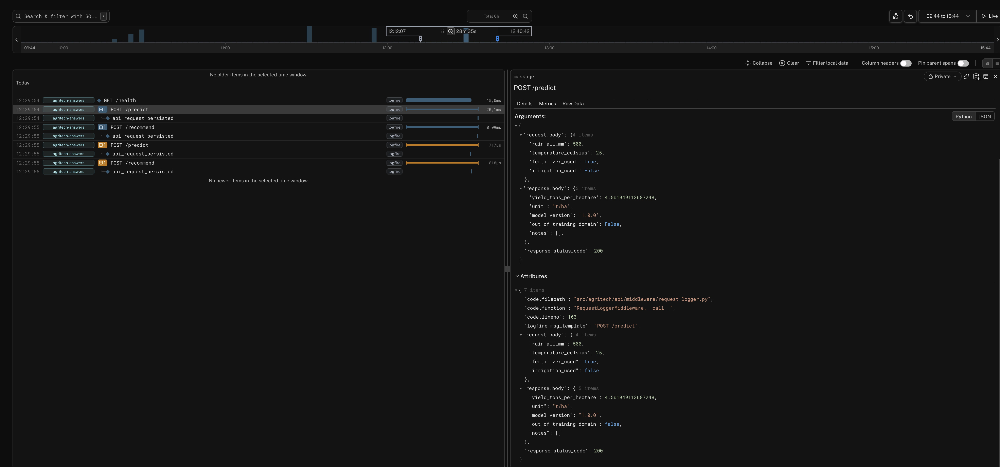
La timeline Logfire permet de distinguer immédiatement les appels réussis (200) des erreurs de validation (422). Le panneau de détail donne accès à la requête, à la réponse et au statut de l'appel.
H. Docker
L'API, l'interface Streamlit et le dashboard Gradio sont packagés dans des images Docker pour les rendre
portables et reproductibles. Chaque image ne contient que le nécessaire au runtime ; seule celle de l'API embarque
les artefacts modèles. Streamlit et Gradio appellent l'API par le réseau Docker (http://api:8000).
make docker-demo # construit les trois images, démarre les services, attend qu'ils répondent et les ouvre
make docker-down # arrête et supprime les conteneurs
Les données d'observabilité (base SQLite api.sqlite) vivent dans un volume Docker nommé agritech_monitoring, qui
survit aux recréations du conteneur.
Ne jamais utiliser docker compose down -v : cette commande supprime le volume agritech_monitoring, donc
l'historique des appels.
| Variable | Valeur Compose | Rôle |
|---|---|---|
DATABASE_URL |
sqlite:////app/data/monitoring/api.sqlite |
Base SQLite d'observabilité |
ENVIRONMENT |
local |
Persistée dans api_requests.environment |
LOGFIRE_ENVIRONMENT |
local |
Contexte Logfire |
LOGFIRE_SERVICE_NAME |
agritech-answers-api |
Nom de service Logfire |
LOGFIRE_TOKEN |
optionnel | Sans token, mode silencieux, aucun envoi réseau |
MONITORING_API_TOKEN |
depuis le shell ou .env |
Token des endpoints /monitoring/*, transmis à l'API et au dashboard Gradio |
Les cibles make docker-* transmettent LOGFIRE_TOKEN et MONITORING_API_TOKEN s'ils sont définis (shell ou
.env). La CI et Render construisent les services à partir du même Dockerfile (chapitre 6) ; sur Render, les
variables sont fixées par les Blueprints et les secrets saisis dans Render.
Les analyses, le code et les notebooks sont disponibles dans le dépôt du projet.